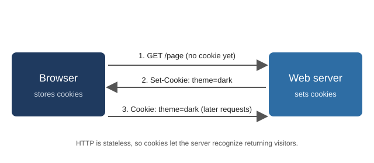

How Cookies Work
Topic 1: The mechanics of cookies
Setting and Sending a Cookie
A cookie starts as a response header. When a server replies to a browser request,
it can include a Set-Cookie header. The browser saves the value and
includes it in a Cookie header on later requests to the same site.
The diagram below shows this three-step cycle.

Why cookies exist: HTTP treats every request as independent. Cookies add memory, which is why you stay logged in when you return to a site.
Cookie Attributes
Servers control how a cookie behaves by adding attributes after its value.
| Attribute | What it does | Example |
|---|---|---|
Expires or Max-Age |
Sets how long the browser keeps the cookie. Without it, the cookie is a session cookie. | Max-Age=86400 (one day) |
Secure |
Sends the cookie only over HTTPS connections. | Secure |
HttpOnly |
Hides the cookie from JavaScript (document.cookie), which reduces theft by cross-site scripting. |
HttpOnly |
SameSite |
Controls whether the cookie is sent on cross-site requests. Values are Strict, Lax, and None. |
SameSite=Lax |
Types of Cookies
Session cookies and persistent cookies
A session cookie has no expiration date and is normally removed when the browser closes. A persistent cookie has an expiration date and stays on the device until that date. Persistent cookies are how sites remember you across visits.
First-party and third-party cookies
A first-party cookie belongs to the site you are visiting. A third-party cookie is set by another domain, usually an advertising or analytics company whose code runs inside the page. Because the same third party can appear on many sites, its cookie can follow you from one site to the next.
| Type | Lifetime | Typical use |
|---|---|---|
| First-party session | Until the browser closes | Keeping items in a shopping cart |
| First-party persistent | Days, months, or years | Remembering language or login |
| Third-party persistent | Often long | Cross-site advertising and tracking |
Beyond Cookies
Cookies are not the only way to store data. Browsers also offer local storage, which holds key-value data that is not sent with each request, and device fingerprinting, which identifies a device by combining details such as screen size, fonts, and browser version. Fingerprinting stores nothing on the device, so it is harder for users to see and delete.